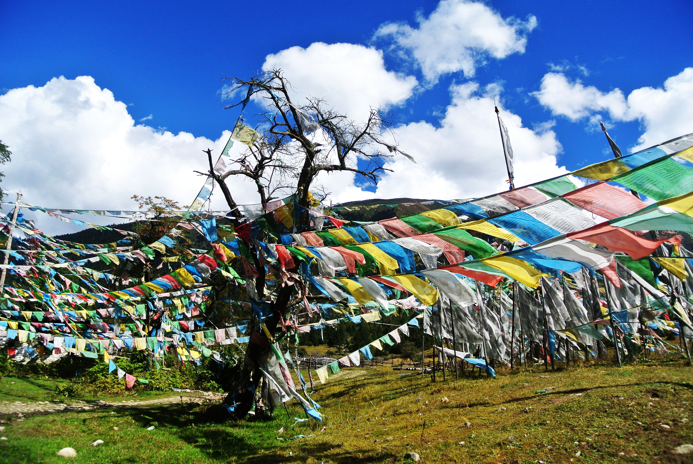
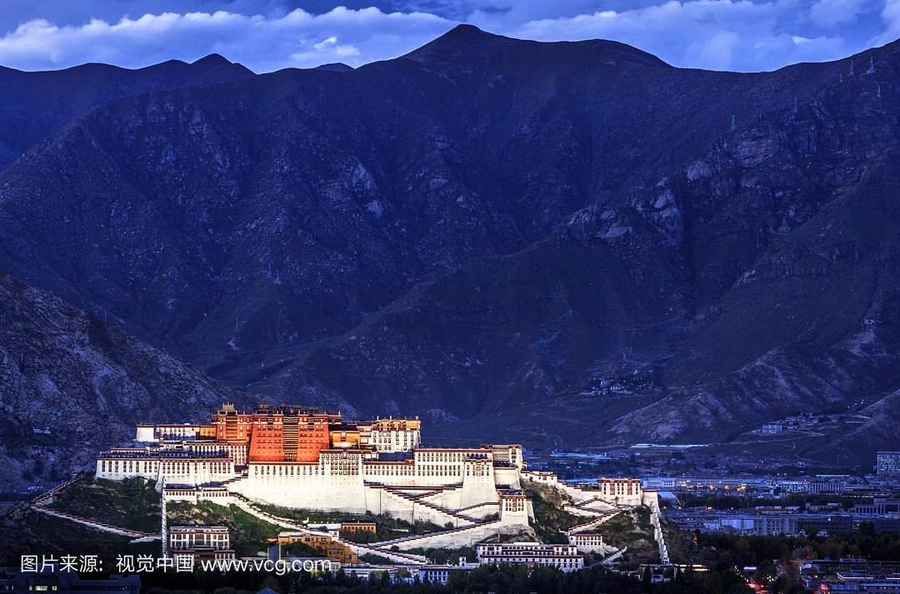
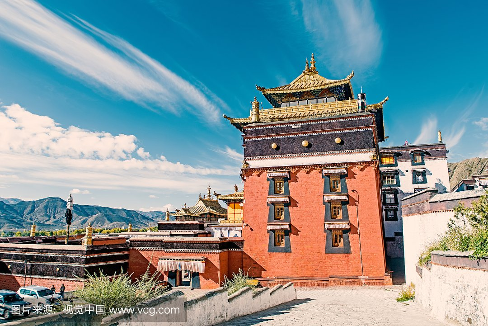
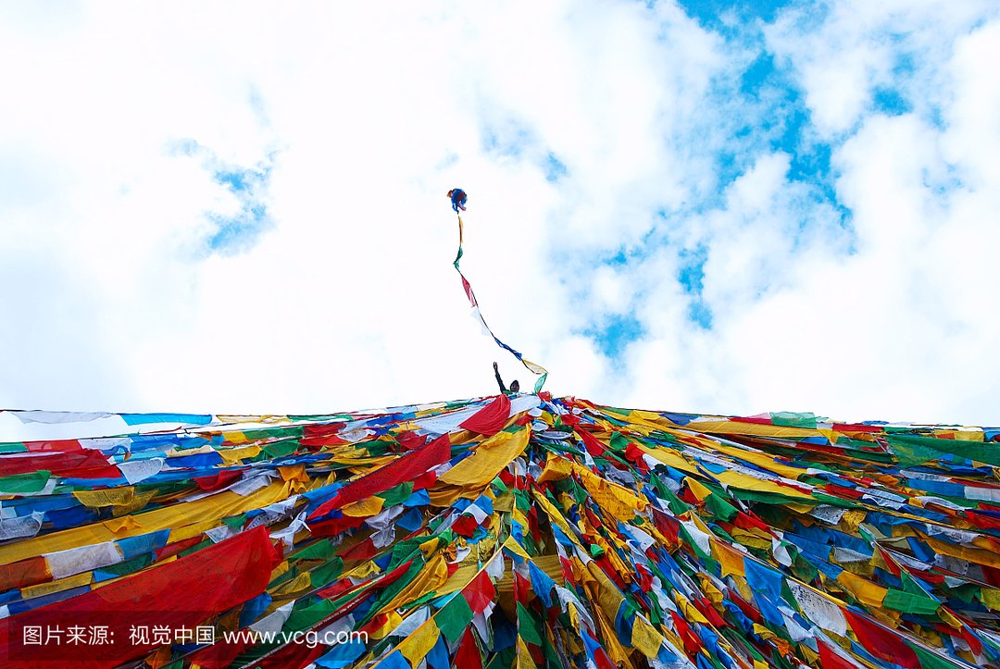

morly旅游网
一说西藏，你肯定想到了美丽的布达拉宫和大草原还有青藏铁路，安逸舒适的风景，想过去美丽的西藏吗？
位于中国青藏高原西南部，地处北纬26°50′至36°53′，东经78°25′至99°06′之间。
北邻新疆维吾尔自治区，东连四川省，东北紧靠青海省，东南连接云南省，南与缅甸、印度、不丹、尼泊尔等国家毗邻，西与克什米尔地区接壤，陆地国界线4000多公里，南北最宽900多公里，东西最长达2000多公里，是中国西南边陲的重要门户，无出海口。
全区面积120.223万平方公里，约占全国总面积的1/8，在全国各省、市、自治区中仅次于新疆。平均海拔在4000米以上，素有“世界屋脊”之称。2012年末全区常住人口总数为308万人， 辖4个地级市、3个地区，4个市辖区、72个县。
拉萨
拉萨是中国西藏自治区的首府，西藏的政治、经济、文化和宗教中心，也是藏传佛教圣地，拉萨位于西藏高原的中部、喜马拉雅山脉北侧，海拔3650米（要防内源氧缺乏症），地处雅鲁藏布江支流拉萨河中游河谷平原，拉萨河流经此，在南郊注入雅鲁藏布江。
日喀则
西藏自治区下辖地级市，位于中华人民共和国西南边陲，青藏高原西南部，西衔阿里地区、北靠那曲地区、东邻拉萨市与山南地区，外与尼泊尔、不丹、印度等国接壤，国境线长1753公里，国土面积18.2万平方公里，平均海拔4000米以上。。
那曲
西藏自治区地级市，那曲曾名“黑河”，因怒江上游的那曲河流经境内而得名。1956年10月，西藏自治区筹备委员会在那曲设立基巧办事处。
 阿里地区
是中华人民共和国西藏自治区的一个地级行政区。元朝称纳里，明朝称俄力思。位于青藏高原北部--羌塘高原核心地带，是中国西藏自治区的一个地区级行政区划，世界上人口密度最小的地区之一，拥有独特的高原自然风貌。
藏族人民是中华民族大家庭中的重要一员。西藏唐宋时期称为“吐蕃”，元明时期称为“乌斯藏”，清代称为“唐古特”、“图伯特”等。清朝康熙年间起称“西藏”至今。
西藏以其雄伟壮观、神奇瑰丽的自然风光闻名。它地域辽阔，地貌壮观、资源丰富。自古以来，这片土地上的人们创造了丰富灿烂的民族文化。
内容整理至网络，如有侵权，请联系我们！1255394075@qq.com